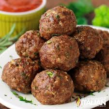

MeatBall

Are a popular dish made by shaping ground meat into small, round, or oval balls and then cooking them through various methods such as frying, baking, or simmering in sauce. The choice of meat can vary and may include beef, pork, veal, chicken, turkey, or a combination of these.
Ingredients:
- 1 pound ground beef
- 1/2 cup breadcrumbs
- 1/4 cup grated Parmesan cheese
- 1/4 cup chopped fresh parsley
- 1 large egg
- 2 cloves garlic, minced
- 1 teaspoon salt
- 1/2 teaspoon black pepper
- 1 tablespoon olive oil
- 2 cups marinara sauce
Instructions:
- In a large bowl, combine ground beef, breadcrumbs, Parmesan cheese, parsley, egg, garlic, salt, and pepper. Mix until well combined.
- Form the mixture into meatballs, about 1 inch in diameter.
- In a large skillet, heat olive oil over medium heat. Add the meatballs and cook until browned on all sides, about 8-10 minutes.
- Pour marinara sauce over the meatballs and simmer for 10-15 minutes, until the meatballs are cooked through.
- Serve hot with pasta or crusty bread.